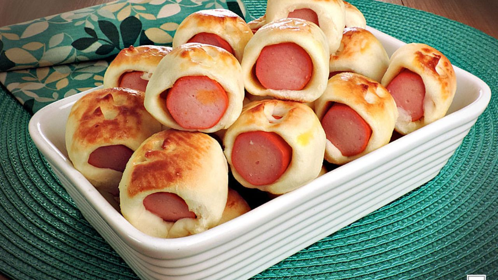

Enroladinho de salsicha

Imagem ilustrativa de um enroladinho de salsicha assado
Ingredientes Necessários
3 xícaras de água
2 colheres de óleo
sal a gosto
2 xícaras e 1/2 de trigo
1 sachê de tempero pronto
Recheio:
1kg de salsicha
e farinha de rosca para empanar
Modo de Preparo
Duração estimada: 35 minutos
Misture tudo da massa e leve ao fogo.
Mexa bastante (o ponto e a massa desgrudar da panela), quando der o ponto retire do fogo e reserve.
Corte todas as salsichas pela metade.
Unte as mãos com óleo e enrole as salsichas na massa.
Passe na farinha de rosca e frite em óleo novo e bem quente.
Uma dica: Jogue um fósforo no óleo, se o fósforo ascender o óleo está quente.